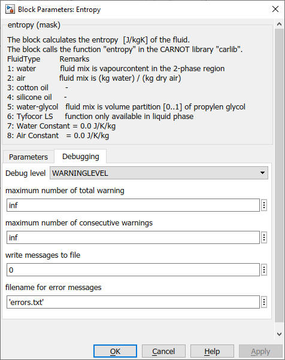

Entropy
Path: CARNOT/Basic/Material_Properties
Purpose:
This block calculates the entropy [J/kg/K] of the specified material.
Description:
This block calculates the specific enthalpy in [J/kg/K] according to the inputs.
The block calls up the function entropy
in the CARNOT Carlib Library
where the calculation is carried out. The material properties functions can also
be called directly from the command window by typing
entropy(temperature, pressure, fluid_type, fluid_mix)
in the Matlab Command Window. Instead of the italic variables the actual value
of the respective property has to be entered.
For more information about the function type:
help entropy
For the calculation of steam, the properties are calculated according to
E.Schmidt: Properties of water and steam [Schmidt, 1982]. The steam
properties can be calculated for a temperature range up to 800°C and a pressure
range up to 49.055 MPa. The calculations of the saturation states are performed
with the polynomials fitted from [Schmidt, 1982]. The valid temperature range
is from the triple temperature 0.01°C up to the critical temperature
Tk = 374.15 °C and the pressure range respectively from the triple
pressure 612 Pa up to 22.1287 MPa. The entropy values for the liquid phase are
not yet implemented.
The enthalpy is only available for the fluids water (fluid type 1) and air
(fluid type 2).
The valid range is for the respective value is:
| fluid_ID | fluid | phase | temperature | pressure |
| 1 | water | vaporous | 0.01 °C < T < 800 °C | p < 49 MPa |
| 1 | water | liquid | 0.01 °C < T < 374.15 °C | 612 Pa < p < 22.1287 MPa |
| 2 | air | gaseaous | 0 °C < T < 1000 °C | 0.1 MPa < p < 2 MPa |
Input:
| T | : | temperature in °C |
| p | : | pressure in Pa |
| Fluid_Type | : | see definition of CARNOT fluid types |
| Fluid_Mix | : | see definition of CARNOT fluid mixtures |
Output:
| entropy | : | entropy of the fluid in J/kg/K |
Parameters and Dialog Box:
You can choose the inputs to be the :

Use the GlobalMessageLevel block to handle the debugging messages.
Examples:
Open the example explorer from the Matlab command window
ExampleBrowser
or load the examples via the CARNOT library.
Literature:
Schmidt, E.: Properties of Water and Steam in SI Units, ed. by U. Grigull,
Berlin, Springer und München, Oldenbourg 1982
Characteristics:
| Direct Feedthrough | : | No |
| Sample Time | : | Inherited from driving block |
| Vectorized | : | No |